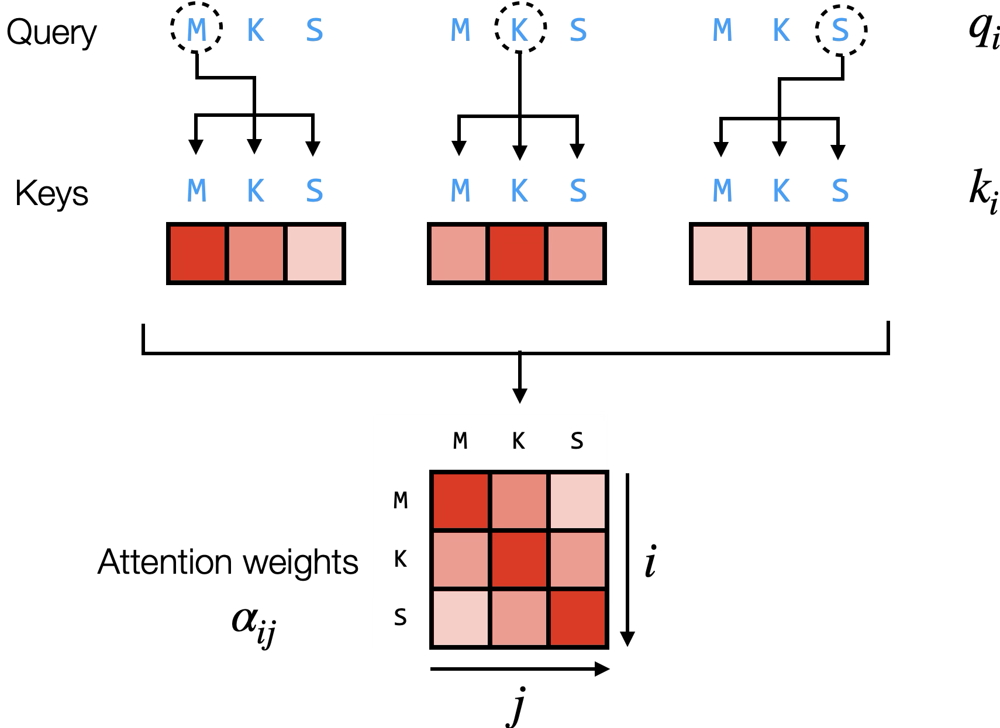
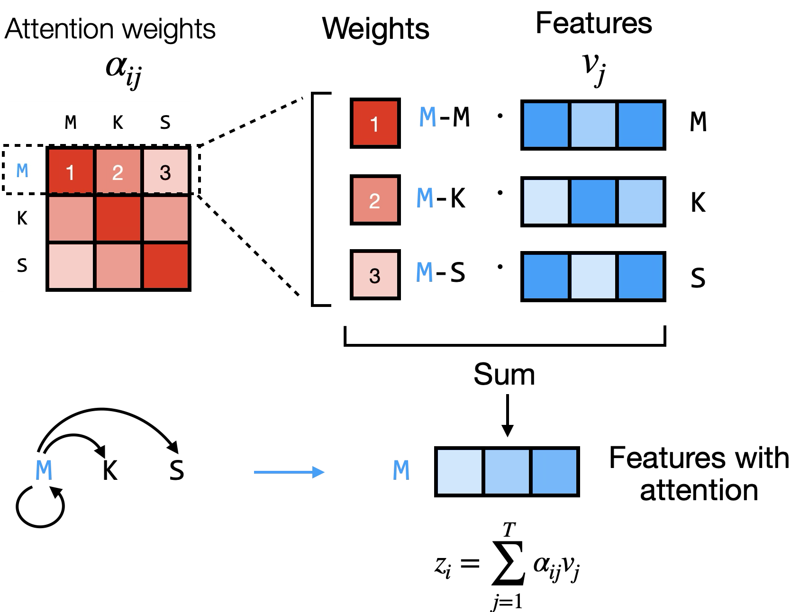
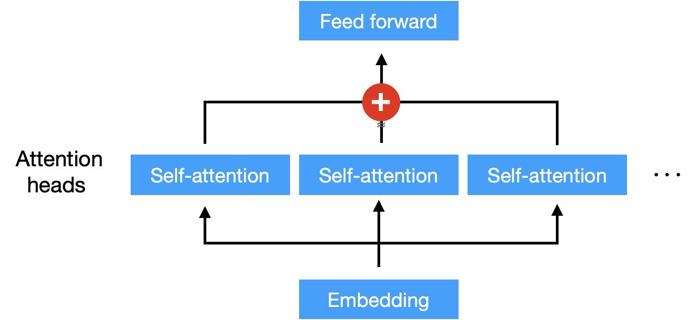
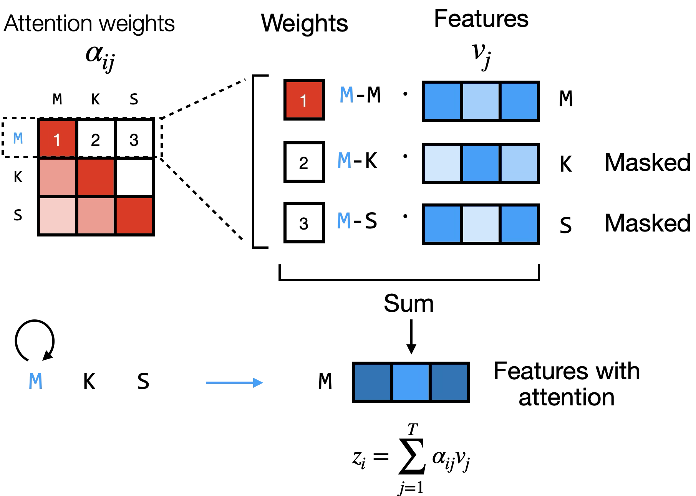

Slot 83 attention · Attention Mechanism (08-1 cell 1) · mock
Every weight drawn here is the trained tiny BERT's (D 48, four heads of 12, two blocks, masked-token
pretraining on the synthetic clinical notes, 3,000 steps, seed 0), block 1, read from
attention-mock-data.json, which attention-measure.py --export wrote. Block 1's input is
x̃ itself, the token row plus the position row, where widget 74 stops. Widget 49 already steps one untrained head
through [3, 4], where the weights are flat; this widget begins where training has made them mean
something. His figures are shown beside the arms they are drawn from. Filled states so they can be judged; the
widget opens empty. On-canvas strings are candidates, not copy.
0 · What the measurement found
1 · Page Weights — one query, its keys, its row of α
treated with aspirin for chest pain, head 4, the query aspirin: 0.79 of its weight falls on chest pain (08-1 cell 1: to understand "aspirin", the model should focus strongly on "treated" and "chest pain"). A Step computes the next query's row, as his figure's three panels do; the matrix fills row by row. A is his figure as drawn. B puts the row on the sentence as arcs, his output figure's glyph, with the matrix left to the Heads page.

A: it is his figure, and the matrix growing a row a Step is what the Heads page then shows whole.
2 · Page Output — zi = Σ αij vj
His output figure as drawn: the query's row lifted out, each weight times that key's value vector (12 numbers, head 4's v), summed into the query's new vector. The value strips are signed, so they take the two ends of one range; the weights keep the matrix's single ramp.

One arm: his figure. The open call is below (§ 6, 1): Weights and Output as two pages, as the lesson has them, or one page whose Step runs weights then output for each query, since 49 already draws the output.
3 · Page Heads — four heads on the same x̃
His multi-head figure: the embedding into several self-attention heads, joined, into the feed-forward. Each head's
whole matrix on the same sentence, with what that head looks at over 500 held-out notes (torch, W1) under it. The
join is drawn as the concatenation it is, [L, 4 × 12] → WO → [L, 48]; his
figure draws a +. The feed-forward is 84's, drawn and dimmed.

Printed under each head: its measured habit (next token 0.55 · the clause 0.55 · previous token 0.64 · the clause 0.52). Not printed: which head "does" anything. Zeroing heads showed a head's weights are not how much the model needs it (W3): in a one-block model the head with 0.00 on the symptom costs the drug slot most.
4 · Page Mask — padding (08-3 cell 4) and causal (his figure)
His mask figure is the causal mask (08-1 cell 2, the decoder's masked self-attention): a key after the query
gets no weight, and the row renormalises. The padding mask is 08-3 cell 4's (src_key_padding_mask)
and 08-1 cell 5's attention_mask. A: padding, the same sentence padded to 16 without and with the
mask. B: causal as his figure draws it. The arc planned padding here and causal on 84's Decoder page.

5 · The scale, ÷√dk
A: a display control on the Weights page, ÷√dk on or off, re-reading the
same trained q and k: the rows sharpen (head 4's mean top weight 0.57 → 0.85 on this sentence; all four heads 0.68 → 0.92). It reads what the
division does to trained scores, not what training without it would give. B: the arithmetic alone, in the
formula card's place: ten keys, unit-variance q and k, the top weight against dk (the arc mock's figure).
C: the formula alone, softmax(q·k / √dk). Trained without the division
at dk 64 the rows went one-hot (0.98) and training was slower; at this widget's dk 12 it made
no difference (W4), so no page can show that on its own model.
6 · The calls
1 · Pages. Weights · Output · Heads · Mask, the lesson's order (recommended) · or three, Weights and Output as one page (each Step: the row, then the sum), since 49 already draws an output.
2 · Weights layout. A his figure, query → keys → row, matrix filled a row a Step (recommended) · B arcs over the sentence.
3 · Mask. A padding here, causal on 84's Decoder page (the arc's plan; recommended) · B causal here, as his figure · C a Mask control None · Padding · Causal on this page.
4 · The scale. A a display control on Weights (recommended: the only arm that uses the trained model) · B the arithmetic figure · C the formula only.
5 · The sentences. A the four below from the synthetic notes, the lesson's treated with aspirin for chest pain first (recommended) · B his figures' three letters M K S, a protein, which the clinical model cannot read.
| sentence (a Sentence control) | what it carries |
|---|---|
treated with aspirin for chest pain | 08-1 cell 1's own; aspirin → chest pain 0.79 in head 4 |
treated with [MASK] for chest pain | 08-1 cell 4's MLM example; [MASK] → chest pain 0.84 and 0.83 in heads 4 and 2 |
patient presented with fever . yellow discharge from wound | discharge reads its own clause's cue words |
no nausea reported . planned discharge home today | the other sense of the same word |
6 · The title. Deep Learning - Attention (recommended; the collection's form for a
concept) · Deep Learning - Language: Attention (the data-type form of 72–75) · slug
attention.
His weight figure's diagonal. dl-language-attention-weight.png and
-output.png draw each token's own key as its largest weight. Trained, the own token is the largest in
1–13% of rows (W1); the weight goes to the next token, the previous one, or the clause. A widget drawn from
trained weights will not look like the figure's diagonal, and says so in no caption — noted here for the lesson.
Left to the draft, conventional: block 1 of the arc's base model (84 continues it); the Head
control defaulting to head 4; the Step label; the matrix's ramp in --c-magnitude, the query in
--c-group-a and the keys in --c-group-b (49's and 53's roles), v and z on
--c-value-low / --c-value-high; the JS forward reproducing the export to 1e-6.